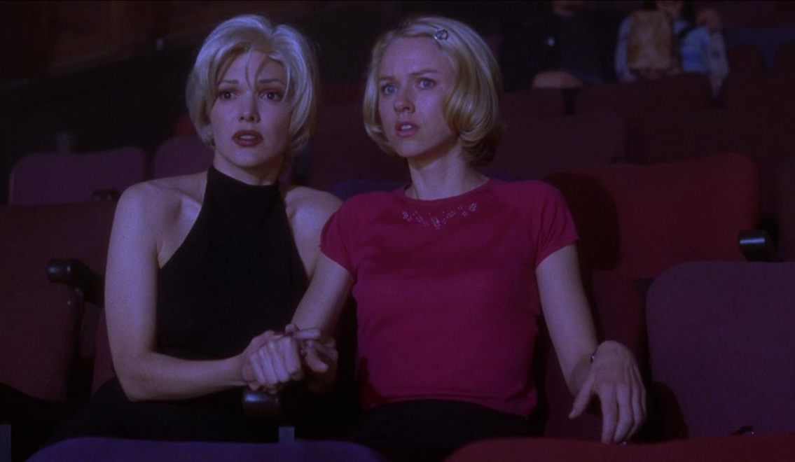
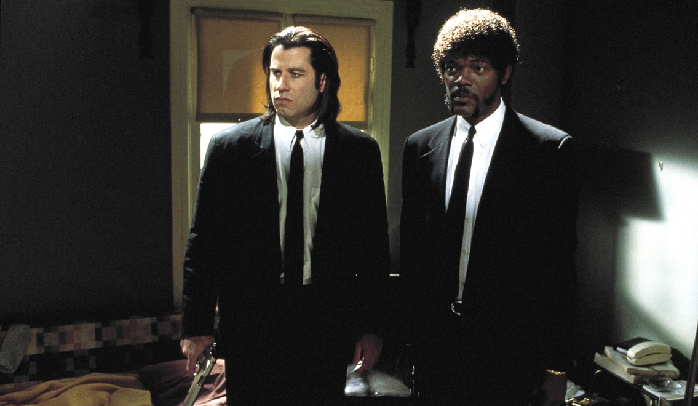
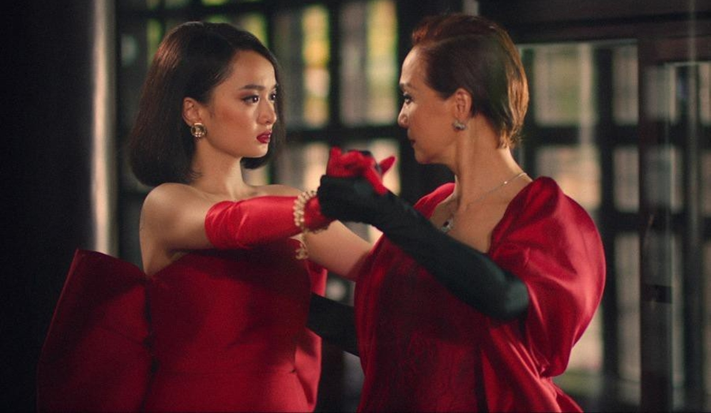

Ký Sự Điện Ảnh – Kỳ 10: Làm Đạo Diễn Khó Hay Dễ?
Thế nào là cảm thụ điện ảnh? Không phải phim ảnh chỉ để giải trí thôi sao, hà cớ gì lại còn phải suy nghĩ nặng đầu chỉ để phân tích hàng tá thứ. Thật ra nói vậy cũng không hẳn sai, rõ ràng sau chuỗi thời gian dài làm việc căng thẳng, cảm giác được ăn uống những món yêu thích rồi chọn một cuốn phim hay để xem chính là giải pháp thư giãn tốt nhất. Tuy nhiên cũng có người chọn nghe nhạc hoặc đọc sách. Thế nhưng có nhiều phim rõ ràng không thể chỉ đơn thuần dùng làm phương tiện giải trí. Bởi lẽ chúng mang nhiều khung hình ẩn ý, đem theo cả hệ thống tư tưởng mà đạo diễn muốn truyền tải, thậm chí là nội dung có phần thách thức bộ não. Cần có sự tập trung cao độ nếu muốn hiểu những gì phim đang nói đến.

Nghe qua có vẻ nặng nhọc, thế nhưng vẫn có nhiều tín đồ điện ảnh mê đắm thứ nghệ thuật đa chiều đa cảm ấy. Đối với họ xem phim được chia thành mục đích. Ngoài gu cá nhân ra, có lúc việc trải nghiệm một thước phim nào đấy hoàn toàn vì chuyện giải trí. Tuy nhiên có khi cần sự chiêm nghiệm và hứng thú (lệ thuộc vào tâm trạng) nhất định nào đó để thưởng thức một tác phẩm nặng tính học thuật – hàn lâm.
Dù có là vì mục đích nào đi nữa, những cá thể yêu phim đều rất đa dạng về mọi mặt. Đấy có thể là người hâm mộ của các xuất phẩm đến từ Hàn Quốc, một fan trung thành của dòng phim xứ Hương Cảng. Hoặc có người chỉ xem mỗi phim Hollywood, dòng phim độc lập tuy không quá phổ biến nhưng vẫn có lượng người yêu thích đông đảo. Điện ảnh Việt Nam có thể chưa thật sự lớn mạnh, dẫu vậy vẫn có cho mình số lượng người ủng hộ nhất định.
Câu nói yếu tố để cho ra đời một tác phẩm hay phụ thuộc vào KỊCH BẢN vốn đã quen thuộc từ lâu. Tuy nhiên từ những câu chữ vô tri trên giấy cho đến khi tạo thành các góc máy ấn tượng có chiều sâu thì lại cần nhiều hơn thế. Đạo diễn chính là nhân tố được nhắc đến nhiều nhất, có tầm ảnh hưởng đến chất lượng của bộ phim.
Ngành đạo diễn thường không đi kèm những điều kiện quá khó đối với những ai có mong muốn làm nghề. Khá nhiều tên tuổi lớn trên thế giới chưa từng được đào tạo bài bản qua trường lớp. Đối với họ, chuyên môn là thứ có thể tiếp thu từ đời sống hằng ngày. Hoặc dựa vào những thước phim kinh điển để coi chúng như sách giáo khoa. “Quái kiệt” Quentin Tarantino là một ví dụ truyền cảm hứng cho những cá nhân vô danh có mong ước trở thành đạo diễn. Ông xuất thân từ một nhân viên làm việc tại cửa hàng cho thuê băng đĩa, chính môi trường công việc đã tạo điều kiện cho ông có cơ hội tiếp xúc với nhiều phim điện ảnh đến từ các quốc gia khác nhau. Chính những năm tháng ấy đã tôi rèn nên tư duy độc đáo của Taratino, để rồi ông áp dụng chúng để tạo nên hàng loạt tác phẩm để đời.

Hiển nhiên không phải cứ làm đạo diễn, cho ra đời vài bộ phim chiếu rạp thì sẽ thành công. Ngành công nghiệp điện ảnh từ buổi chào đời cho đến nay đã trải qua nhiều thăng trầm. Không chỉ đơn thuần là ngồi vào ghế chỉ đạo rồi ra lệnh cho ống kính, âm thanh, diễn viên. Đôi khi người đạo diễn còn là một nhà triết gia làm nghệ thuật. Việc gài gắm thông điệp khéo léo nhiều tầng ý nghĩa không hề đơn giản nếu tay nghề không đủ trình độ. Hoặc đôi khi sự hiểu biết về máy quay và sắp đặt bố trí ánh sáng cũng có thể cho ra đời những cảnh phim mang tính “cách mạng”.
Chính bởi vai trò và tính chất có thể “gánh vác” nhiều khía cạnh để tạo ra một bộ phim hoàn hảo, đã khiến cho hai chữ ĐẠO DIỄN mang tầm vóc ý nghĩa lớn lao rất nhiều. Thế nhưng tại Việt Nam, nhiều người lại không mấy mặn mà mỗi khi nhắc đến các đạo diễn trong nước.
Điện ảnh nước nhà không hoàn toàn thiếu nhân tài. Từ trong giai đoạn chiến tranh, phim Việt không ít lần tranh tài ở các giải thưởng lớn tầm Châu lục. Các đạo diễn có cơ hội tu nghiệp tại Liên Xô hoặc các nước lớn đều trở về và ứng dụng những gì tinh túy nhất đã học được, họ đã thành công khi luôn được thế hệ sau nhắc đến cũng như ca tụng.
Thế còn ở thời hiện đại, kỷ nguyên hội nhập trước sự ồ ạt từ làn sóng xâm lấn văn hóa ở nhiều nơi, rõ ràng Việt Nam càng có thêm có hội học hỏi để rộng mở thêm kiến thức. Để rồi nhìn vào thực tế, phim nội địa vẫn còn xảy ra hiện tượng không đồng đều về chất lượng.
Thế hệ các nhà làm phim trẻ luôn bắt đầu bằng nhiệt huyết cao nhất. Kinh nghiệm tham gia các khóa học làm phim ngắn hạng nhưng chất lượng chính là chìa khóa mở ra cánh cổng bước vào điện ảnh của họ. Nhiều cuộc thi làm phim được tổ chức, điều đáng mừng là tại đây luôn có thể chứng kiến những câu chuyện được kể theo phong cách mới mẻ, các góc máy đầy sáng tạo kinh ngạc. Chủ đề luôn táo bạo và thú vị, nhiều góc nhìn khác nhau đến từ nhóm đạo diễn trẻ khiến cho bức tranh về điện ảnh Việt thêm phần khởi sắc.
Thực tế thì lại không mấy tích cực như vậy. Vẫn có thảm họa phim Việt, vẫn tồn tại các nhận định “phim cứ sao sao, chưa tới”, “phim cố tình làm hàn lâm nhưng lại nửa mùa”. Loại bỏ đi yếu tố diễn xuất lẫn kịch bản thì có vẻ thiếu sót lớn nhất đến từ chính tư duy của người đạo diễn.
Tư duy điện ảnh là thứ không xuất hiện ngay từ đầu, mà cần thời gian trau dồi rèn luyện liên tục. Việc ảnh hưởng từ lâu của tư duy sân khấu kịch nghệ lên phim Việt đã trở thành thói quen. Để có cái gọi là “cải cách” bắt buộc phụ thuộc vào quan điểm góc nhìn của đạo diễn. Đây là lúc “cái tôi” cần lên tiếng. Bởi vì phong cách cá nhân, sự “độc” – “lạ” cần phải được đạo diễn “huấn luyện” dần cho người xem. Nói theo cách khác, chính việc “bất cần” và “định hướng” cũng nằm trong nhiệm vụ phụ của đạo diễn. Sở thích xem phim của bộ phận số đông cần có thời gian thích nghi, nhưng họ hoàn toàn có thể chấp nhận cái mới NẾU nó thật sự có chất lượng tốt.
Việc ra mắt một tác phẩm tâm huyết nhưng lại không nhận được sự đón nhận ắt hẳn rất đáng buồn. Có thể vì nhiều nguyên nhân. Truyền thông sai đối tượng, đời tư gây tranh cãi của một thành viên nào đấy trong ekip, nội dung lỗi thời. Bên cạnh đó, đôi khi chỉ đơn giản vì phim không hay, thay vì tiếp thu ý kiến để có sự cải thiện, nhiều nhà làm phim hoặc đạo diễn sẵn sàng đổ lỗi sang phía khán giả. Thậm chí là phát ngôn chỉ trích khi người xem không ủng hộ phim Việt. Cũng có khi người đạo diễn tránh né trách nhiệm để không phải hứng chịu “gạch đá” bằng cách quy tội sang các thành viên khác, để biện hộ cho việc phim thất bại.
Thế hệ đạo diễn trẻ trưởng thành từ dòng phim độc lập đôi khi khó giữ được cái chất của mình, đặc biệt là ở mảng điện ảnh thương mại. Việc bị ám ảnh bởi suy nghĩ “phim Việt thuần Việt nhất”, “gần gũi hiện thực xã hội nhất”…, đã khiến cho các phẩm của họ nhiều lúc bị “cường điệu hóa” về góc khuất xã hội. Có thể đến từ việc chịu sự ảnh hưởng từ sở thích thần tượng một đạo diễn tài ba nào đấy, sẽ gián tiếp thể hiện rõ đến phong cách làm phim.
Từng có ý kiến cho rằng các đạo diễn gốc Việt sống ở nước ngoài lại là những người làm phim “đậm chất Việt nhất”. Họ sống xa quê hương từ nhỏ dẫn đến sự “nhạy cảm” với những gì không thường xuyên chứng kiến. Nhờ vậy hình thành suy nghĩ chủ quan nhìn xoáy vào hiện thực, dù rằng thỉnh thoảng sẽ dẫn đến việc phim Việt nhưng lại hơi bị “Tây”.
Các nhà làm phim trẻ trong nước quá tham lam khi cố gắng khai thác mảng phim tâm lý đặc tả hiện thực xã hội dẫn đến việc hình thành suy nghĩ cứ phim “thật tàn khốc”, “thật u ám” thì mới gây được ấn tượng và thể hiện cái “chất nghệ thuật”. Việc ứng dụng chủ nghĩa siêu thực, tân hiện thực hoặc chủ nghĩa biểu hiện một cách vô tội vạ, chủ yếu để phim trông có vẻ “hàn lâm’, “trừu tượng khó hiểu” cũng phần nào khiến cho tư duy điện ảnh dễ trở nên “lệch lạc”.
Không phải lúc nào phức tạp hóa mọi thứ cũng là tốt nhất. Không phải phim nghệ thuật là không được phép đơn giản!
Ở phần còn lại, nhiều đạo diễn với chữ “tài” và chữ “tâm” vẫn luôn cố gắng từng ngày. Họ dung hòa giữa việc áp đặt phong cách cá nhân mà vẫn cho ra mắt tác phẩm hợp thị hiếu. Họ vẫn nhìn thấy và thấu hiểu thực trạng mà phim Việt mắc phải, nhưng đối mặt với “doanh thu”, “lợi nhuận”, sự chi phối từ nhà sản xuất, khâu kiểm duyệt hay chỉ vì “dân mình thích mấy cái như vậy”…, thế là đành phải hạn chế mạo hiểm. Thị trường “khó lường” ở Việt Nam vô tình phát sinh các điểm giới hạn cho ngành phim ảnh. Dần dần đi vào lối mòn, có những đạo diễn khi nhắc đến đều được ngưỡng mộ bởi những khung hình tuyệt mỹ họ mang đến, mạnh dạn khai thác nhưng chủ đề mới lạ. Đáng tiếc mọi thứ vẫn dừng lại ở “lớp vỏ”, “phần hồn” bên trong lại không đủ sức nặng để được đánh giá hoàn hảo.
Lại có người luôn ở vùng an toàn, phim mới lẫn phim cũ của họ đều tuân theo một công thức nào đấy. Không thể chấm điểm “dở”, cũng khó mà khen “phim hay”. Bên cạnh đấy, vẫn có nhà làm phim tự tin “thái quá” về khả năng của mình. Có thể “đánh tráo” khái niệm bằng việc xây dựng một thương hiệu nhiều phần phim, kinh phí cao, đạt chút thành tích thì đã cho rằng đấy là tác phẩm hay.
Ở một hướng khác, thành công của việc cho ra đời những cuốn phim “làm lại” cũng được xem là rào cản cho sự tiến bộ của phim Việt. Phép thử “kịch bản gốc” từng đem đến trái đắng cho không ít đạo diễn có tiếng trong nghề.

Tương lai của điện ảnh Việt vẫn đang tràn đầy tín hiệu tích cực, chặng đường phía trước là sự đồng hành đến từ phía khán giả lẫn nhà làm phim. Khán giả có khó tính mới có thể làm chuẩn cho sự chắt lọc các tác phẩm hay. Phim dở bị đào thải, phim hay được nhìn nhận công bằng hơn. Sự nghiêm túc ở hai phía chính là bệ phóng đưa phim Việt chinh phục các đỉnh cao mới.